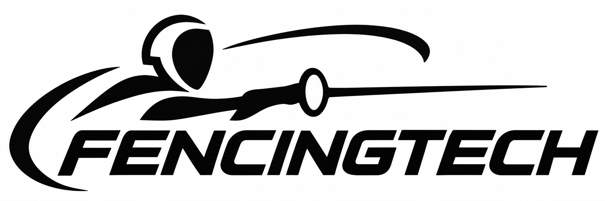

Automatic Trainer
Exploring a more repeatable way to practice movement, timing, and distance.
Open the video file In development
Thoughtful technology for fencing
FencingTech is an independent project exploring practical ideas for training and competing, built around the needs of fencers on the strip.
Explore the projectsOn the workbench
Early ideas, shaped by the sport.
Exploring a more repeatable way to practice movement, timing, and distance.
Open the video file In developmentA wireless epee concept focused on keeping movement natural on the strip.
In developmentExploring a dedicated plate to make key measurements easier to check and repeat.
In developmentA custom-fit grip exploration shaped around the fencer's hand and preferred feel.
In development